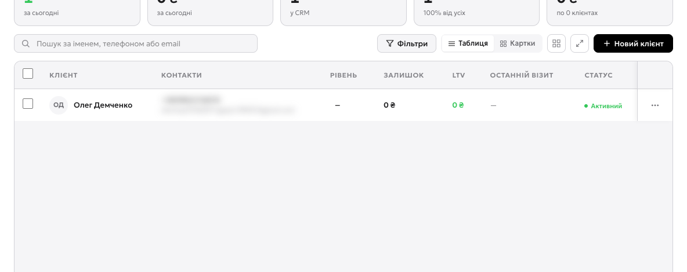
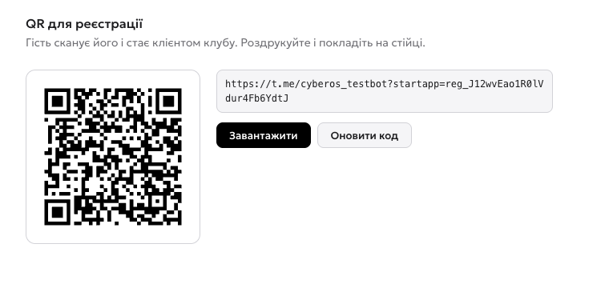
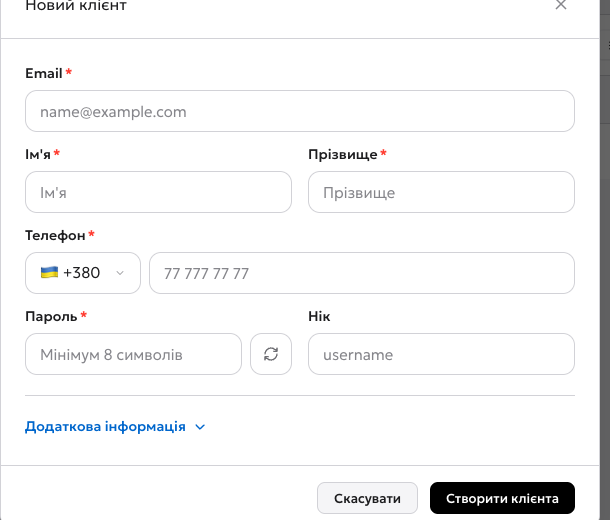
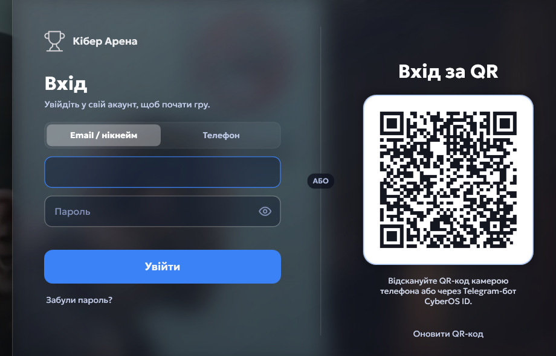
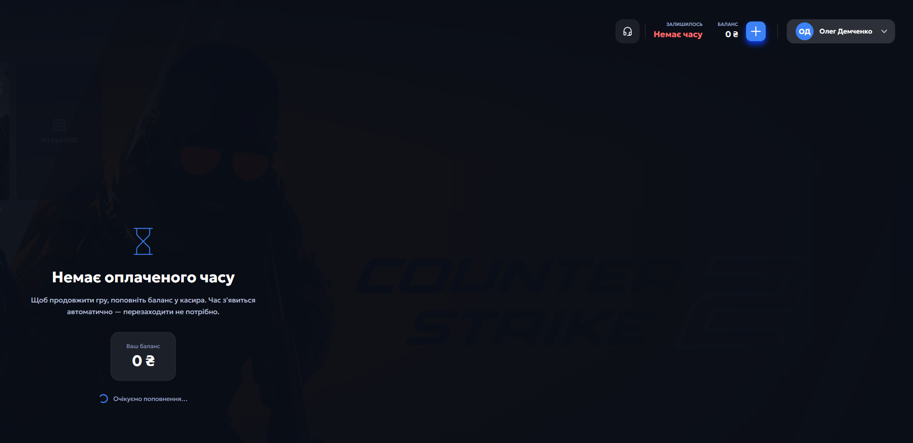

Два шляхи, якими гість стає клієнтом
Клієнт у CyberOS — не запис у зошиті, а акаунт: з ним він заходить у Shell на машині, на ньому тримається баланс, час, історія візитів і лояльність. Завести клієнта можна двома способами, і обидва потрібні в житті клубу.
- 1Новий клієнт — ручне заведення картки. Потрібне, коли гість уже стоїть біля стійки, а телефона під рукою немає.
- 2Пошук — за іменем, телефоном або поштою. Так касир знаходить постійного гостя за секунду.
- 3Фільтри — рівень лояльності, статус, наявність балансу. Стануть у пригоді, коли клієнтів буде кілька сотень.

QR клубу: гість реєструється сам
QR лежить у Налаштування → Клуб → Реєстрація. Це код саме вашого клубу: хто його сканує, той стає клієнтом саме у вас.
- 1QR клубу — гість наводить камеру телефона, потрапляє в Telegram-бот CyberOS ID, тисне «Старт» і реєструється сам. Клієнт зʼявляється у вашому списку без участі персоналу.
- 2Те саме посилання текстом — його можна кинути в сторіс, чат клубу або на сайт. Код у посиланні привʼязаний саме до вашого клубу.
- 3Завантажити — картинка QR для друку. Найкраще працює наліпка на стійці й на кожному столі.
- 4Оновити код — видає новий код і в ту ж мить вимикає старий. Тисніть лише якщо код справді втік не туди.

Що це за QR і чому він так працює
Це не посилання на сайт із формою реєстрації. У коді зашите посилання на Telegram-бот CyberOS ID разом із кодом вашого клубу. Тому гість не заповнює анкету й не вигадує пароль: у нього вже є Telegram, і акаунт створюється в ньому за хвилину — а клуб, у який він потрапив, система визначає з коду в посиланні.
Клієнт вручну
Кнопка «Новий клієнт» на сторінці «Клієнти». Обовʼязкових полів пʼять, і головне з них — пароль: саме з ним гість зайде в Shell.
- 1Email — логін клієнта. З ним він заходить у Shell на клубному ПК.
- 2Імʼя — його бачить касир у чеку й Shell на екрані машини.
- 3Прізвище — обовʼязкове, як і імʼя.
- 4Телефон — обовʼязковий і має бути унікальним: двом клієнтам той самий номер система не дасть.
- 5Пароль — мінімум 8 символів. Його задаєте ви, тому одразу скажіть гостю або запропонуйте змінити після входу.

Перевірка: клієнт заходить у Shell
Тепер найважливіше — переконатися, що логін працює на самій машині. Ось екран входу Shell на клубному ПК.
- 1Email або нікнейм — те, що ви ввели в картці клієнта.
- 2Пароль — той, що ви задали при створенні.
- 3Увійти — і сесія починається.
- 4Телефон — той самий вхід, але за номером. Гостю зручніше, ніж диктувати пошту.
- 5Вхід за QR — для тих, хто вже реєструвався через бот: наводить телефон і заходить без пароля.

Клієнт у Shell
Вхід удався: Shell вітає клієнта імʼям і одразу каже, чого не хватає — часу. Це нормальний стан нового гостя, поки касир не продав години.
- 1Імʼя клієнта у Shell — вхід удався, машина знає, хто за нею сидить.
- 2Залишок часу й баланс — у нового клієнта порожні, поки касир не продасть години.
- 3«Немає оплаченого часу» — Shell сам просить поповнити баланс у касира й чекає. Гостю не треба перезаходити: час зʼявиться в цьому ж вікні.

Відео: QR клубу і клієнт вручну
Прохід панеллю: список клієнтів, QR для реєстрації в налаштуваннях клубу, заведення клієнта руками й його картка. Пошта й телефон у кадрі розмиті.